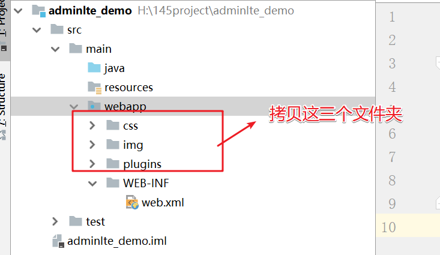

学习目标
- 理解SaaS工程的数据库设计思路
- 熟练使用PD工具创建数据库模型
- 能够使用AdminLTE模板创建页面
- 完成企业管理的CRUD
1. 多租户数据库设计方案（一）什么是多租户？
多租户技术（Multi-TenancyTechnology）又称多重租赁技术：是一种软件架构技术，是实现如何在多用户环境下（此处的多用户一般是面向企业用户）共用相同的系统或程序组件，并且可确保各用户间数据的隔离性。简单讲：在一台服务器上运行单个应用实例，它为多个租户（客户）提供服务。从定义中我们可以理解：多租户是一种架构，目的是为了让多用户环境下使用同一套程序，且保证用户间数据隔离。那么重点就很浅显易懂了，多租户的重点就是同一套程序下实现多用户数据的隔离。
2. 多租户数据库设计方案（二）需求分析
传统软件模式，指将软件产品进行买卖，是一种单纯的买卖关系，客户通过买断的方式获取软件的使用权，软件的源码属于客户所有，因此传统软件是部署到企业内部，不同的企业各自部署一套自己的软件系统。
Saas模式，指服务提供商提供的一种软件服务，应用统一部署到服务提供商的服务器上，客户可以根据自己的实际需求按需付费。用户购买基于WEB的软件，而不是将软件安装在自己的电脑上，用户也无需对软件进行定期的维护与管理。
在SaaS平台里需要使用共用的数据中心以单一系统架构与服务提供多数客户端相同甚至可定制化的服务，并且仍可以保障客户的数据正常使用。由此带来了新的挑战，就是如何对应用数据进行设计，以支持多租户，而这种设计的思路，是要在数据的共享、安全隔离和性能间取得平衡。
==目前基于多租户的数据库设计方案通常有如下三种：==
- 独立数据库服务(mysql数据库服务器)
- 共享数据库服务器、独立 Schema(数据库 create database db1)
- 共享数据库服务器、共享 Schema(数据库)，共享数据表
3. 多租户数据库设计方案1独立数据库服务器
独立数据库：
每个租户一个数据库服务器。
优点：
数据隔离级别高
安全性高
缺点：
增多了数据库的安装数量，随之带来维护成本和购置成本的增加
如图：
4. 多租户数据库设计方案2共享数据库服务器、独立 Schema （数据库）
什么是Schema？
oracle数据库：在oracle中一个数据库可以具有多个用户，那么一个用户一般对应一个Schema，表都是建立在Schema中的,（可以简单的理解：在oracle中一个用户一套数据库表）
如图：
mysql数据库：mysql数据中的schema比较特殊，并不是数据库的下一级，而是等同于数据库。比如执行create schema test 和执行create database test效果是一模一样的。
如图：
共享数据库、独立 Schema：即多个或所有的租户使用同一个数据库服务（如常见的ORACLE或MYSQL数据库），但是每个租户一个Schema。
优点： 实现一定的数据隔离性
成本低廉
缺点：
如果出现故障，数据恢复比较困难
如果需要跨租户统计数据，存在一定困难。如图1：
如图2：类似于下面的结构
5. 多租户数据库设计方案3共享数据库服务器与共享数据库与表
共享数据库、共享数据表：
即租户共享同一个Database，同一套数据库表（所有租户的数据都存放在一个数据库的同一套表中）。在表中增加租户ID等租户标志字段，表明该记录是属于哪个租户的。
优点：
所有租户使用同一套数据库\同一套表，所以成本低廉。
缺点：
隔离级别最低，安全性最低，需要在设计开发时加大对安全的开发量，数据备份和恢复最困难。
如图：
小结：
多租户的数据库设计的三种方案？每种方案的特点如何
- 独立数据库的服务器 特点：隔离性高，安全性也高，成本也高
- 共享数据库的服务器，独立数据库， 特点： 有一定隔离性，成本低，数据恢复比较困难
- 共享数据库服务器、数据库， 共享表、 特点： 价格低廉，开发代码量大，因为需要增加字段维护每条数据所属的企业6. 数据库设计与建模（一）三大范式
目标
- 理解三大范式
- 理解反三大范式
三大范式
数据库的三范式：指导你设计表的一种规范
==三范式最核心思想： 减少冗余数据==
第一范式（1NF）：确保每一列的原子性（做到每列不可拆分）
用户表：
不满足第一范式的设计:
| id | name | address |
|---|---|---|
| 100 | Jerry | 广东省广州市天河区吉山村9巷58号 |
满足第一范式的设计:
| id | name | province | city | address |
|---|---|---|---|---|
| 100 | Jerry | 广东省 | 广州市 | 天河区吉山村9巷58号 |
第二范式（2NF）：一张表只描述一件事情（每张表只描述一类事物）
第三范式：任何非主属性不依赖于其它非主属性（一张表的字段如果要使用另外一张表的数据，那么只能维护外键列去引用另外张表的主键。）
反三范式
反三范式是基于三范式基础上做出一些调整的，没有冗余的数据库未必是最好的数据库，有时为了提高运行效率，就必须降低范式标准，==适当保留冗余数据==。
==反三范式的目的： 减少多表查询，因为多表查询的是最影响的效率的，提高查询的效率==
小结
- 什么是反三范式？ 反三范式的作用是什么？
- 基于三范式的基础上做出一些调整，适当保留一些冗余数据，以减少多表查询，提高查询的效率
7. 数据库设计与建模（二）数据库建模
目标
- 了解数据库建模思想
- 了解数据库建模工具
- 使用PowerDesigner进行数据库建模
建模思想
对于数据库表的表设计应该怎么做呢？答案是数据库建模
数据库建模：在设计数据库时，对现实世界进行分析、抽象、并从中找出内在联系，进而确定数据库的结构。它主要包括两部分内容：确定最基本的数据结构；对约束建模。
数据库建模工具
对于数据模型的建模，最有名的要数PowerDesigner，PowerDesigner是在中国软件公司中非常有名的，其易用性、功能、对流行技术框架的支持、以及它的模型库的管理理念，都深受设计师们喜欢。他的优势在于：不用在使用create table等语句创建表结构，数据库设计人员只关注如何进行数据建模即可，将来的数据库语句，可以自动生成。
PowerDesigner建模
选择新建数据库模型
打开PowerDesigner，File->New Model:
- 控制面版
创建表
图1：
设置表关系
导出SQL
图1：
图2：
8. AdminLTE（一）介绍
目标
- 了解AdminLTE
- 了解黑马定制版AdminLTE
为什么需要学习AdminLte去搭建一个后台首页
原因： 以后我们去公司如果开发的项目是公司的内部项目，那么是没有给你们配备美工的， 这时候我们需要
自己去找模板去搭建后台首页。
AdminLTE
AdminLTE是一款建立在bootstrap和jquery之上的开源的模板主题工具， 它提供了一系列响应的、可重复使用的组件， 并内置了多个模板页面； 同时自适应多种屏幕分辨率，兼容PC和移动端。 通过AdminLTE， 我们可以快速的创建一个响应式的Html5网站。 AdminLTE框架在网页架构与设计上， 有很大的辅助作用，尤其是前端架构设计师， 用好AdminLTE 不但美观， 而且可以免W去写很大CSS与JS的工作量。
点击DOWNLOAD进入下载页（基友网站）：https://github.com/almasaeed2010/AdminLTE
黑马定制版AdminLTE
传智播客研究院针对英文版本AdminLTE进行了汉化， 并优化与定制了部分页面， 方便我们的学习与使用。 后续SSM综合练习课程中使用的界面就是基于AdminLTE2-IT黑马-定制版。
大家可以去github上下载https://github.com/itheima2017/adminlte2-itheima
- 我们将AdminLTE2-ITHEIMA -定制版本下载解压的目录结构如下：
由于AdminLTE2-ITHEIMA -定制版是基于FIS3进行开发， 在目录结构中assets、 modules、 pages、plugins都是前端开发时所使用到的， ==最终发布的就是release。 所以对于我们使用AdminLTE2-IT黑马-定制版来说， 我们只需要关注release目录下的结构就可以。==
在release目录下有css、 img、 pages、 plugins目录。 前两者就不在解决pages是产生的一些定制的页面， 而plugins中是相关的插件， 例如jquery、 bootstrap等相关的css与js文件。
9. AdminLTE（二）入门程序
目标
搭建AdminLTE运行环境。
步骤
- 创建项目，引入css/js等静态资源
- 创建index.jsp 首页 （头，左侧，内容区域为空）
- 点击首页的“产品管理”，进入页面：product-list.jsp
- 为了确保所有的页面都使用相同的头部，左侧页面。所有抽取公用的head.jsp, aside.jsp
- 测试
实现
创建项目并且转换为web项目，引入css/js等静态资源
图1：
图2：项目结构图

创建index.jsp
图1：参考页面
图2：创建index.jsp， 把上面页面内容全部拷贝到index.jsp==（需要保留jsp的声明头信息,否则乱码）==
抽取head页面出来，然后index.jsp包含head.jsp页面即可
处理左边菜单栏，抽离处理出来成为一个aside页面，然后index。jsp动态包含该页面
修改index.jsp的内容把内容区域的数据拿掉，然后填写iframe标签。
在aside页面的超链接要带上target，target属性名写上iframe的name的属性值即可。
10. 企业管理（一）需求分析、部署UI
目标
- 明确企业管理模块的实现需求
- 部署UI资源
- 分析执行流程
需求
完成租用企业管理的CRUD开发：
部署UI资源，完成
第一步：拷贝课程中已经提供的“项目页面”资源
第二步：拷贝到项目中
第三步：分析项目资源、资源执行流程
第四步：编写LoginController，提供login()方法，转发到main.jsp
图1:编写控制器
package cn.itcast.web.controller;
import org.springframework.stereotype.Controller;
import org.springframework.web.bind.annotation.RequestMapping;
@Controller
public class LoginController {
/*
作用： 跳转到后台首页/home/main.jsp
*/
@RequestMapping("/login")
public String login(){
return "home/main";
}
}
第五步: 分析main.jsp
b
第六步: LoginController添加home()方法
图1: 添加方法

package cn.itcast.web.controller;
import org.springframework.stereotype.Controller;
import org.springframework.web.bind.annotation.RequestMapping;
@Controller
public class LoginController {
/*
作用： 跳转到后台首页/home/main.jsp
*/
@RequestMapping("/login")
public String login(){
return "home/main";
}
/*
作用： 后台首页的中间内容需要加载/home/home.jsp
*/
@RequestMapping("/home")
public String home(){
return "home/home";
}
}
11. 企业管理（二）添加
需求
实现修改功能，分为2步： ① 进入添加页面； ② 添加保存
实现添加企业信息到数据库ss_company表
数据库表
页面功能入口

分析
点击新建，需要跳转到company-add.jsp页面。
由于WEB-INF下的资源不能直接访问，所有需要先由控制器转换到添加页面，再实现添加。
进入添加页面
查看company-list.jsp中 “新建” 按钮提交地址
CompanyController添加方法

package cn.itcast.web.controller.company;
import cn.itcast.domain.company.Company;
import cn.itcast.service.company.CompanyService;
import org.springframework.beans.factory.annotation.Autowired;
import org.springframework.stereotype.Controller;
import org.springframework.web.bind.annotation.RequestMapping;
import javax.servlet.http.HttpServletRequest;
import java.util.Date;
import java.util.List;
@Controller
@RequestMapping("/company")
public class CompanyController {
@Autowired
private CompanyService companyService;
/*
作用： 进入企业添加页面
url: /company/toAdd.do
参数：没有
返回值 : company-add
*/
@RequestMapping("/toAdd")
public String toAdd(){
return "company/company-add";
}
}
添加保存实现
步骤：
1.点击保存，查看页面提交地址
2.CompanyController添加方法
3.CompanyService接口和实现添加方法
4.CompanyDao接口添加方法及配置Dao映射
具体步骤：
点击保存，查看页面提交地址
CompanyController添加方法
package cn.itcast.web.controller.company;
import cn.itcast.domain.company.Company;
import cn.itcast.service.company.CompanyService;
import org.springframework.beans.factory.annotation.Autowired;
import org.springframework.stereotype.Controller;
import org.springframework.util.StringUtils;
import org.springframework.web.bind.annotation.RequestMapping;
import javax.servlet.http.HttpServletRequest;
import java.util.Date;
import java.util.List;
@Controller
@RequestMapping("/company")
public class CompanyController {
@Autowired
private CompanyService companyService;
/*
作用：添加企业，更新企业
url: /company/edit.do
参数：Company 企业对象信息
返回值 : 企业列表页面
*/
@RequestMapping("/edit")
public String edit(Company company){
// if(company.getId()==null &&"".equals(company.getId())){
if(StringUtils.isEmpty(company.getId())){ //判断一个变量是否为空串,相当于上面的语句
//添加
companyService.save(company);
}else{
//更新
companyService.update(company);
}
return "redirect:/company/list.do"; //访问上面的list方法
}
}
- service添加2个方法： save(), update()
接口
package cn.itcast.service.company;
import cn.itcast.domain.company.Company;
import java.util.List;
public interface CompanyService {
//查找所有的企业
List<Company> findAll();
//添加企业
void save(Company company);
//更新企业
void update(Company company);
}
实现
package cn.itcast.service.company.impl;
import cn.itcast.dao.company.CompanyDao;
import cn.itcast.domain.company.Company;
import cn.itcast.service.company.CompanyService;
import org.springframework.beans.factory.annotation.Autowired;
import org.springframework.stereotype.Service;
import java.util.List;
import java.util.UUID;
//创建Service对象，并且放入spring的容器
@Service
public class CompanyServiceImpl implements CompanyService {
@Autowired //自动注入
private CompanyDao companyDao;
//添加企业
@Override
public void save(Company company) {
//注意：这里id没有使用自增，因为是字符串的类型的，字符串类型的id我们可以使用uuid确保唯一性
//使用uuid的好处： 如果我们使用的是int类型的主键，其实容易会溢出，因为int有存储范围。一旦超过就会溢出
company.setId(UUID.randomUUID().toString());
companyDao.save(company);
}
//更新企业
@Override
public void update(Company company) {
companyDao.update(company);
}
}
- dao 接口
package cn.itcast.dao.company;
import cn.itcast.domain.company.Company;
import java.util.List;
public interface CompanyDao {
//新增企业
void save(Company company);
//更新企业
void update(Company company);
}
- dao 接口映射
图1：
图2：CompanyDao.xml完整内容
<?xml version="1.0" encoding="UTF-8" ?>
<!DOCTYPE mapper PUBLIC "-//mybatis.org//DTD Mapper 3.0//EN"
"http://mybatis.org/dtd/mybatis-3-mapper.dtd">
<!--名称空间：接口的全类名-->
<mapper namespace="cn.itcast.dao.company.CompanyDao">
<!--
//保存企业
void save(Company company);-->
<insert id="save" >
insert into ss_company values(
#{id},
#{name},
#{expirationDate},
#{address},
#{licenseId},
#{representative},
#{phone},
#{companySize},
#{industry},
#{remarks},
#{state},
#{balance},
#{city})
</insert>
<!-- //更新企业
void update(Company company);
-->
<update id="update">
update ss_company SET
name=#{name},
expiration_date=#{expirationDate},
address=#{address},
license_id=#{licenseId},
representative=#{representative},
phone=#{phone},
company_size=#{companySize},
industry=#{industry},
remarks=#{remarks},
state=#{state},
balance=#{balance},
city=#{city}
WHERE id=#{id}
</update>
</mapper>12. 企业管理（三）修改 A 进入修改页面
需求
实现修改功能
实现修改功能，分为2步： ① 进入修改页面（数据回显）； ② 修改保存
本章先实现进入修改页面，功能入口如下：
步骤
- 检查company-list.jsp页面，向后台传入要修改的记录的id
- controller控制器添加方法，实现根据id查询
- service接口与接口实现
- dao接口和映射
- company-update.jsp回显数据
- 测试
实现
检查company-list.jsp页面，向后台传入要修改的记录的id
controller控制器添加方法，实现根据id查询

package cn.itcast.web.controller.company;
import cn.itcast.domain.company.Company;
import cn.itcast.service.company.CompanyService;
import org.springframework.beans.factory.annotation.Autowired;
import org.springframework.stereotype.Controller;
import org.springframework.util.StringUtils;
import org.springframework.web.bind.annotation.RequestMapping;
import javax.servlet.http.HttpServletRequest;
import java.util.Date;
import java.util.List;
@Controller
@RequestMapping("/company")
public class CompanyController {
@Autowired
private CompanyService companyService;
/*
作用 ： 进入更新企业的页面
url : /company/toUpdate.do?id=5b810ce0-be2b-4450-9fd3-d0856dd86a5f
参数 : 企业id
返回值 :company-update
*/
@RequestMapping("/toUpdate")
public String toUpdate(String id,HttpServletRequest request){
//1. 根据企业的id查找企业
Company company = companyService.findById(id);
//2. 存储到request域中
request.setAttribute("company",company);
//3. 请求转发到company-update页面
return "company/company-update";
}
}
- service接口与接口实现
接口
package cn.itcast.service.company;
import cn.itcast.domain.company.Company;
import java.util.List;
public interface CompanyService {
//根据id查找企业
Company findById(String id);
}
实现
package cn.itcast.service.company.impl;
import cn.itcast.dao.company.CompanyDao;
import cn.itcast.domain.company.Company;
import cn.itcast.service.company.CompanyService;
import org.springframework.beans.factory.annotation.Autowired;
import org.springframework.stereotype.Service;
import java.util.List;
import java.util.UUID;
@Service
public class CompanyServiceImpl implements CompanyService {
@Autowired
private CompanyDao companyDao;
//根据id查找企业
@Override
public Company findById(String id) {
Company company = companyDao.findById(id);
return company;
}
}
- dao接口和映射
接口

package cn.itcast.dao.company;
import cn.itcast.domain.company.Company;
import java.util.List;
public interface CompanyDao {
//根据id查找企业
Company findById(String id);
}
映射
<?xml version="1.0" encoding="UTF-8" ?>
<!DOCTYPE mapper PUBLIC "-//mybatis.org//DTD Mapper 3.0//EN"
"http://mybatis.org/dtd/mybatis-3-mapper.dtd">
<mapper namespace="cn.itcast.dao.company.CompanyDao">
<!--1.自定义实体类与数据库表的字段映射关系-->
<resultMap id="BaseResultMap" type="Company">
<!--column: 数据库的列名 property： 实体类的属性名
复制数据库的内容的时候我们可以按下alt+鼠标滑动
-->
<id column="id" property="id"/>
<result column="name" property="name"/>
<result column="expiration_date" property="expirationDate"/>
<result column="address" property="address"/>
<result column="license_id" property="licenseId"/>
<result column="representative" property="representative"/>
<result column="phone" property="phone"/>
<result column="company_size" property="companySize"/>
<result column="industry" property="industry"/>
<result column="remarks" property="remarks"/>
<result column="state" property="state"/>
<result column="balance" property="balance"/>
<result column="city" property="city"/>
</resultMap>
<!--
//根据id查找企业
Company findById(String id);-->
<select id="findById" resultMap="BaseResultMap">
select * from ss_company where id =#{id}
</select>
</mapper>company-update.jsp回显数据（已经完成）
测试
图1：
图2：
13. 企业管理（三）修改 B 修改保存
需求
实现企业信息的修改，如图：
![1、
步骤
- 检查页面提交地址
- controller控制器实现保存
- service添加保存方法
- dao添加保存方法
- 测试
实现
检查页面提交地址 （已完成）
controller控制器实现保存（已完成）
service添加保存方法（已完成）
dao添加保存方法（已完成）
接口
接口映射：
14. 企业管理（四）删除
需求
选中一行，点击删除：
步骤
- 查看company-list.jsp页面的js代码（已经完成）
- controller 添加删除方法
- service 实现删除
- dao添加删除方法
- 测试
实现
查看company-list.jsp页面的js代码（已经完成）
图1：
图2：
图3：
CompanyController 添加Delete方法删除方法
package cn.itcast.web.controller.company;
import cn.itcast.domain.company.Company;
import cn.itcast.service.company.CompanyService;
import org.springframework.beans.factory.annotation.Autowired;
import org.springframework.stereotype.Controller;
import org.springframework.util.StringUtils;
import org.springframework.web.bind.annotation.RequestMapping;
import javax.servlet.http.HttpServletRequest;
import java.util.Date;
import java.util.List;
@Controller
@RequestMapping("/company")
public class CompanyController {
@Autowired
private CompanyService companyService;
/*
作用 ：删除
url :/company/delete.do?id=02e1da04-43f8-42e1-a4c2-66e162c6f4a5
参数 : id 企业id
返回值 : 企业列表
*/
@RequestMapping("/delete")
public String delete(String id){
companyService.delete(id);
return "redirect:/company/list.do";
}
}
CompanyService接口添加Delete方法删除方法,并且实现
接口
package cn.itcast.service.company; import cn.itcast.domain.company.Company; import java.util.List; public interface CompanyService { //根据id删除企业 void delete(String id); } 4. CompanyService接口实现类添加Delete方法删除方法,并且实现
package cn.itcast.service.company.impl;
import cn.itcast.dao.company.CompanyDao;
import cn.itcast.domain.company.Company;
import cn.itcast.service.company.CompanyService;
import org.springframework.beans.factory.annotation.Autowired;
import org.springframework.stereotype.Service;
import java.util.List;
import java.util.UUID;
@Service
public class CompanyServiceImpl implements CompanyService {
@Autowired
private CompanyDao companyDao;
//根据id删除企业
@Override
public void delete(String id) {
companyDao.delete(id);
}
}
dao添加删除方法
接口
package cn.itcast.dao.company;
import cn.itcast.domain.company.Company;
import org.springframework.stereotype.Component;
import org.springframework.stereotype.Service;
import java.util.List;
public interface CompanyDao {
//根据企业的id删除企业
void delete(String id);
}
接口映射
<?xml version="1.0" encoding="UTF-8" ?>
<!DOCTYPE mapper PUBLIC "-//mybatis.org//DTD Mapper 3.0//EN"
"http://mybatis.org/dtd/mybatis-3-mapper.dtd">
<mapper namespace="cn.itcast.dao.company.CompanyDao">
<!-- //根据id删除企业
void delete(String id);-->
<delete id="delete">
delete from ss_company where id=#{id}
</delete>
</mapper>15. 分页关键点回顾
目标
- 理解项目分页需求
- 回顾分页后台实现流程、关键点
分页需求

分页关键点分析
- （1）分页的后台关键部分分析如下：
每次点击下一页的时候，前端页面都会向后台发送 “当前页码 pageNum”,”页面大小 pageSize”
==存在的问题==
（1）从这里我们看出，每一种数据库分页语句不同，我们实现分页需要针对每一种数据库定制符合其语法的SQL，如果更换数据库，需要修改分页SQL。
（2）除了这些以外，我们还要定义PageBean，封装分页参数
16. PageHelper 介绍
介绍
PageHelper是国内非常优秀的一款开源的mybatis分页插件，它支持基本主流与常用的数据库， 例如mysql、 oracle、mariaDB、 DB2、 SQLite、Hsqldb等。
本项目在 github 的项目地址： https://github.com/pagehelper/Mybatis-PageHelper
本项目在 gitosc 的项目地址： http://git.oschina.net/free/Mybatis_PageHelper
官网
PageHelper入门案例
第一步：添加依赖(==已经添加==)
<dependency>
<groupId>com.github.pagehelper</groupId>
<artifactId>pagehelper</artifactId>
<version>最新版本</version>
</dependency>第二步：在 Spring 配置文件中配置拦截器插件
使用 spring 的属性配置方式，可以使用 plugins 属性像下面这样配置：
<!--3. 创建SqlSessionFactoryBean -->
<bean class="org.mybatis.spring.SqlSessionFactoryBean">
<property name="dataSource" ref="dataSource"/>
<!--扫描实体类的包，使用别名-->
<property name="typeAliasesPackage" value="cn.itcast.domain"/>
<property name="plugins">
<array>
<bean class="com.github.pagehelper.PageInterceptor">
<property name="properties">
<!--使用下面的方式配置参数，一行配置一个 -->
<value>
helperDialect=mysql
reasonable=true
</value>
</property>
</bean>
</array>
</property>
</bean>第三步：分页插件参数介绍 （主要看第一个、第五个参数）
helperDialect：分页插件会自动检测当前的数据库链接，自动选择合适的分页方式。 你可以配置helperDialect属性来指定分页插件使用哪种方言。配置时，可以使用下面的缩写值：oracle,mysql,mariadb,sqlite,hsqldb,postgresql,db2,sqlserver,informix,h2,sqlserver2012,derby
特别注意：使用 SqlServer2012 数据库时，需要手动指定为sqlserver2012，否则会使用 SqlServer2005 的方式进行分页。
你也可以实现AbstractHelperDialect，然后配置该属性为实现类的全限定名称即可使用自定义的实现方法。offsetAsPageNum：默认值为false，该参数对使用RowBounds作为分页参数时有效。 当该参数设置为true时，会将RowBounds中的offset参数当成pageNum使用，可以用页码和页面大小两个参数进行分页。rowBoundsWithCount：默认值为false，该参数对使用RowBounds作为分页参数时有效。 当该参数设置为true时，使用RowBounds分页会进行 count 查询。pageSizeZero：默认值为false，当该参数设置为true时，如果pageSize=0或者RowBounds.limit = 0就会查询出全部的结果（相当于没有执行分页查询，但是返回结果仍然是Page类型）。reasonable：分页合理化参数，默认值为false。当该参数设置为true时，pageNum<=0时会查询第一页，pageNum>pages（超过总数时），会查询最后一页。默认false时，直接根据参数进行查询。params：为了支持startPage(Object params)方法，增加了该参数来配置参数映射，用于从对象中根据属性名取值， 可以配置pageNum,pageSize,count,pageSizeZero,reasonable，不配置映射的用默认值， 默认值为pageNum=pageNum;pageSize=pageSize;count=countSql;reasonable=reasonable;pageSizeZero=pageSizeZero。supportMethodsArguments：支持通过 Mapper 接口参数来传递分页参数，默认值false，分页插件会从查询方法的参数值中，自动根据上面params配置的字段中取值，查找到合适的值时就会自动分页。 使用方法可以参考测试代码中的com.github.pagehelper.test.basic包下的ArgumentsMapTest和ArgumentsObjTest。autoRuntimeDialect：默认值为false。设置为true时，允许在运行时根据多数据源自动识别对应方言的分页 （不支持自动选择sqlserver2012，只能使用sqlserver），用法和注意事项参考下面的场景五。closeConn：默认值为true。当使用运行时动态数据源或没有设置helperDialect属性自动获取数据库类型时，会自动获取一个数据库连接， 通过该属性来设置是否关闭获取的这个连接，默认true关闭，设置为false后，不会关闭获取的连接，这个参数的设置要根据自己选择的数据源来决定。
第四步： 在export_dao中的AppTest添加testPageHelper方法
package cn.itcast.test;
import cn.itcast.dao.company.CompanyDao;
import cn.itcast.domain.company.Company;
import com.github.pagehelper.PageHelper;
import com.github.pagehelper.PageInfo;
import org.junit.Test;
import org.junit.runner.RunWith;
import org.springframework.beans.factory.annotation.Autowired;
import org.springframework.test.context.ContextConfiguration;
import org.springframework.test.context.junit4.SpringJUnit4ClassRunner;
import java.util.List;
@RunWith(SpringJUnit4ClassRunner.class)
@ContextConfiguration("classpath:spring/applicationContext-dao.xml")
public class CompanyTest {
@Autowired
private CompanyDao companyDao;
@Test
public void testPage(){
//测试分页
//1. 设置当前页与页面大小
PageHelper.startPage(1,3);
//2. 查询全部
List<Company> list = companyDao.findAll();
//3. 把企业列表交给PageInfo即可，这个理的pageInfo就是你们以前的pageBean.
PageInfo<Company> pageInfo = new PageInfo<>(list);
System.out.println("当前页面："+pageInfo.getPageNum());
System.out.println("页面大小："+pageInfo.getPageSize());
System.out.println("总记录数："+pageInfo.getTotal());
System.out.println("总页数："+ pageInfo.getPages());
System.out.println("上一页："+pageInfo.getPrePage());
System.out.println("下一页："+pageInfo.getNextPage());
System.out.println("页面数据："+pageInfo.getList());
}
}
小结
pageHelper使用步骤
1. 导入依赖
2. 在sqlSessionFactoryBean中配置拦截器
3. 编写代码
- 设置当前页面与页面大小
- 查询全部
- 把查询全部的list添加到PageInfo对象中.17. 项目部署PageHelper
目标
项目部署PageHelper，搭建环境。
步骤：
- 添加PageHelper依赖包
- applicationContext.xml中配置拦截器插件
实现
添加PageHelper依赖包（已完成）
<properties> <pagehelper.version>5.1.8</pagehelper.version> </properties> <dependency> <groupId>com.github.pagehelper</groupId> <artifactId>pagehelper</artifactId> <version>${pagehelper.version}</version> </dependency>applicationContext-dao.xml中配置拦截器插件(已经完成)
图1：
图2：
<?xml version="1.0" encoding="UTF-8"?> <beans xmlns="http://www.springframework.org/schema/beans" xmlns:xsi="http://www.w3.org/2001/XMLSchema-instance" xmlns:context="http://www.springframework.org/schema/context" xsi:schemaLocation="http://www.springframework.org/schema/beans http://www.springframework.org/schema/beans/spring-beans.xsd http://www.springframework.org/schema/context http://www.springframework.org/schema/context/spring-context.xsd"> <!--只需要配置Spring整合Mybatis配置（Dao层配置）--> <!--1.读取db.properties文件--> <!-- classpath: - 只读取当前项目下的类路径(resources目录)下的文件 classpath*: - 可以当前项目及其依赖项目下的类路径(resources目录)下的文件 --> <context:property-placeholder location="classpath:properties/db.properties"/> <!--2.创建数据源--> <bean id="dataSource" class="com.alibaba.druid.pool.DruidDataSource"> <property name="url" value="${jdbc.url}"/> <property name="driverClassName" value="${jdbc.driver}"/> <property name="username" value="${jdbc.username}"/> <property name="password" value="${jdbc.password}"/> </bean> <!--3.创建SqlSessionFactory（使用SqlSessionFactoryBean）--> <bean id="sqlSessionFactory" class="org.mybatis.spring.SqlSessionFactoryBean"> <!--注入数据源--> <property name="dataSource" ref="dataSource"/> <!--mybatis的分页插件--> <property name="plugins"> <array> <bean class="com.github.pagehelper.PageInterceptor"> <!--插件拦截器的参数列表--> <property name="properties"> <value> helperDialect=mysql reasonable=true </value> </property> </bean> </array> </property> </bean> <!--4.配置Dao接口扫描--> <bean class="org.mybatis.spring.mapper.MapperScannerConfigurer"> <property name="basePackage" value="cn.itcast.dao"/> </bean> <!--3，4步的配置目标: 由Spring来扫描Dao接口所在包，使用sqlSessionFactory创建Dao代理对象--> </beans>
18. 使用PageHelper实现分页
目标
通过PageHelper实现后台分页。
步骤
dao提供查询全部的方法。
使用PageHelper实现分页，dao只要定义查询方法即可，service中调用dao会自动分页。
service定义分页查询方法，返回PageHelper提供的封装分页参数的PageInfo对象
测试
引入log4j.properties配置文件，查看生成的SQL
实现
dao提供查询全部的方法。（已经完成 ）
使用PageHelper实现分页，dao只要定义查询方法即可，service中调用dao会自动分页。
CompageService定义分页查询方法，返回PageHelper提供的封装分页参数的PageInfo对象
接口：
package cn.itcast.service.company;
import cn.itcast.domain.company.Company;
import com.github.pagehelper.PageInfo;
import java.util.List;
public interface CompanyService {
//企业分页
PageInfo<Company> findByPage(Integer pageNum,Integer pageSize);
}
实现：
package cn.itcast.service.company.impl;
import cn.itcast.dao.company.CompanyDao;
import cn.itcast.domain.company.Company;
import cn.itcast.service.company.CompanyService;
import com.github.pagehelper.PageHelper;
import com.github.pagehelper.PageInfo;
import org.springframework.beans.factory.annotation.Autowired;
import org.springframework.stereotype.Service;
import java.util.List;
import java.util.UUID;
@Service
public class CompanyServiceImpl implements CompanyService {
@Autowired
private CompanyDao companyDao;
//企业分页
@Override
public PageInfo<Company> findByPage(Integer pageNum, Integer pageSize) {
//设置开始页与页面大小
PageHelper.startPage(pageNum,pageSize);
//2. 查询全部
List<Company> list = companyDao.findAll();
//3. 构建一个PageInfo
PageInfo<Company> pageInfo = new PageInfo<>(list);
return pageInfo;
}
}
19. 企业管理-分页显示
需求
目前为止，我们已经在Service实现了分页查询企业，接着把企业数据在页面进行分页显示
步骤
编写CompanyService的findByPage方法（已完成）
编写CompanyController分页方法
在company-list展示数据
实现
修改CompanyController的list方法
package cn.itcast.web.controller.company;
import cn.itcast.domain.company.Company;
import cn.itcast.service.company.CompanyService;
import com.github.pagehelper.PageInfo;
import org.springframework.beans.factory.annotation.Autowired;
import org.springframework.stereotype.Controller;
import org.springframework.util.StringUtils;
import org.springframework.web.bind.annotation.RequestMapping;
import org.springframework.web.bind.annotation.RequestParam;
import org.springframework.web.servlet.ModelAndView;
import javax.servlet.http.HttpServletRequest;
import java.util.Date;
import java.util.List;
@Controller
@RequestMapping("/company")
public class CompanyController {
@Autowired
private CompanyService companyService;
/*
作用：企业的列表页面,实现分页
*/
@RequestMapping("/list")
public String list(@RequestParam(defaultValue = "1") Integer pageNum,@RequestParam(defaultValue = "5") Integer pageSize,
HttpServletRequest request){
PageInfo<Company> pageInfo = companyService.findByPage(pageNum,pageSize);
//存储到请求域中
request.setAttribute("pageInfo",pageInfo);
//请求转到到页面
return "company/company-list";
}
}
- 在company-list展示数据
修改common/page.jsp页面
<%@ taglib prefix="c" uri="http://java.sun.com/jsp/jstl/core" %>
<%@ page language="java" contentType="text/html; charset=UTF-8" pageEncoding="UTF-8"%>
<html>
<body>
<div class="pull-left">
<div class="form-group form-inline">
总共${pageInfo.pages} 页，共${pageInfo.total} 条数据。
</div>
</div>
<div class="box-tools pull-right">
<ul class="pagination" style="margin: 0px;">
<li >
<a href="javascript:goPage(1)" aria-label="Previous">首页</a>
</li>
<li><a href="javascript:goPage(${pageInfo.prePage})">上一页</a></li>
<c:forEach begin="1" end="${pageInfo.pages}" var="i">
<li class="paginate_button ${pageInfo.pageNum==i ? 'active':''}"><a href="javascript:goPage(${i})">${i}</a></li>
</c:forEach>
<li><a href="javascript:goPage(${pageInfo.nextPage})">下一页</a></li>
<li>
<a href="javascript:goPage(${pageInfo.pages})" aria-label="Next">尾页</a>
</li>
</ul>
</div>
<form id="pageForm" action="${param.pageUrl}" method="post">
<input type="hidden" name="pageNum" id="pageNum">
</form>
<script>
function goPage(page) {
document.getElementById("pageNum").value = page
document.getElementById("pageForm").submit()
}
</script>
</body>
</html>